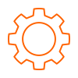
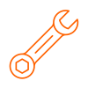
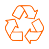

Industrialização interna
85% dos procedimentos de fabricação são realizados dentro do nosso chão de fábrica, garantindo controle total de qualidade.
Equipamentos robustos para trituração, reciclagem e processamento de materiais com o compromisso de construir um futuro melhor.
ROBUSTEZ
E DURABILIDADE

TECNOLOGIA
E DESEMPENHO

BAIXA
MANUTENÇÃO

SUSTENTABILIDADE
E RESPONSABILIDADE
85% dos procedimentos de fabricação são realizados dentro do nosso chão de fábrica, garantindo controle total de qualidade.
Selecionamos componentes premium para entregar equipamentos robustos, duráveis e preparados para grandes demandas.
Projetos personalizados que consideram a sua operação, o ambiente e as necessidades específicas de cada cliente.
Com suporte técnico dedicado, ajudamos a escolher o melhor equipamento para o seu processo e garantir performance na prática.
Conheça as linhas de trituradores industriais que combinam tecnologia avançada, baixo custo de manutenção e engenharia feita para o ambiente brasileiro.
Destaque
O triturador multifuncional para aplicações pesadas, com alta capacidade de processamento e baixo consumo energético.

Linha de força
Construído para operações industriais com suporte reforçado, sistema de segurança integrado e manutenção rápida.
Alta performance
Design compacto e robusto para instalações que precisam de alto desempenho em espaços reduzidos.
Operação leve
Ideal para operações médias, com foco em baixo custo de manutenção e fácil instalação.
Acesse as opções disponíveis para máquinas novas ou usadas e reformadas.
Conheça as soluções mais recentes da Brutusmaq, projetadas para máxima eficiência e confiabilidade.
Ver catálogo de novos →Encontre máquinas recondicionadas que entregam qualidade comprovada com investimento reduzido.
Ver opções usadas e reformadas →Esclarecemos as dúvidas mais importantes sobre capacidade, manutenção, entrega, garantia e consultoria técnica.
Nossos equipamentos são projetados para materiais industriais, resíduos sólidos, plásticos, madeira, pneus e entulho leve, com foco em reciclagem e reaproveitamento.
Oferecemos manutenção preventiva e peças de reposição, além de orientações técnicas para garantir que o equipamento opere com segurança e eficiência.
O prazo varia conforme o projeto e a localidade, mas trabalhamos para atender com rapidez, desde a fabricação até a entrega e suporte inicial de instalação.
Sim. Nossos trituradores acompanham garantia de fábrica e suporte técnico para assegurar desempenho contínuo e satisfação do cliente.
Sim. Desenvolvemos soluções sob medida para cada operação, ajustando capacidade, dimensões e componentes de acordo com a necessidade do cliente.
Temos equipe técnica dedicada para analisar seu processo e recomendar o equipamento ideal, apoiando desde a escolha até a operação diária.